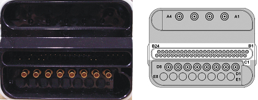
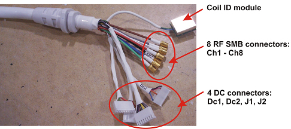

Operating Documentation
Direction 5500113, Rev# 3
Discovery MR450 1.5T Service Methods
Module Version 5.0, Version Date 3/23/10
Operating Documentation |
| Required Persons | Preliminary Reqs | Procedure | Finalization |
|---|---|---|---|
| 1 | Timing N/A | 30 min | Timing N/A |
The following tips can be used to troubleshoot common problems with the 3.0T HD 8-channel NV coil for both E2 connector and E3 connector NV coils.
| Item | Qty | Effectivity | Part # | Manufacturer |
| Digital Volt Meter (DVM) | 1 | - | - | - |
| Phantom Kit (consists of 2413435 and 2413436) | 1 | Legacy Phantom Set | 2414389 | - |
| Phantom Positioner | 1 | Legacy Phantom Set | 2414812 | - |
The following coil configuration names must be installed to run the SNR tool for E2 connector NV coil:
8NVHead
8NVUpChest
8NVSpectro
8NVArray
8NVHeadServ
8NVSpectroServ
8NVArrayServ
The following coil configuration names must be installed to run the SNR tool for E3 connector NV coil:
HDNV UpChest
HDNV Spectro
HDNV Array
HDNV Head
Problem:
You are unable to pre-scan or are scanning and yet receiving no signal.
Possible Solution:
Verify the green light above the port (Port A or B, depends on which port is used to plug in the coil) is illuminated. This indicates the coil is properly plugged into the system.
Verify that the landmark is correct (refer to the 3.0T HD NV Array Setup for Coil SNR Test procedure) and that the cradle has not unlatched.
Verify that the scan locations and any FOV offsets are correct.
Perform a continuity check on the output cable (Section 4.4). The continuity check must be performed by a GE authorized Service Engineer.
Verify that the coil is positioned with the cable exiting towards the bore.
Verify that the cable is not looped or crossed.
Verify that the coil’s quad combiners match the magnet ramping directions.
There can also be a problem at the system interface port. Try scanning in both ports (for Excite3 connectors only). If you still cannot get a signal, try to scan (transmit and receive) with the body coil. For this test, be sure to remove the imaging coil from the magnet bore before you scan with the body coil. If you still receive no signal the problem probably lies with the MR system. If the scan completes successfully, there is probably a problem with the NV coil. Contact GE for further assistance. If you are unable to scan with the substitute coil, there may be a system problem related to this particular coil type.
Problem:
Poor IQ, shaded images, or if SNR fails
Possible Solution:
Perform a continuity check on the output cable (Section 4.4). The continuity check must be performed by a GE authorized Service Engineer.
If the check on the output cable shows that the cable is OK and the low SNR problem happens to one or more of the anterior chest coil channels, replace the anterior chest coil. Refer to the 3.0T HD 8CH NV Cable and Anterior Chest Coil Replacementprocedure.
Verify that there are no loops in the cables.
Verify that there are no metal or ferromagnetic objects close to the coil, patient or magnet (i.e., safety pin, hair pin).
Verify that the coil is properly positioned.
Verify that your center frequency is within the frequency adjustment range for your system.
Verify that the R1, R2 and TG values from the pre-scan are within normally expected ranges.
If you have not done so already, perform the coil Quality Assurance test (refer to Operator’s Manual ). If the values you obtain do not fall within normal operating parameters, investigate this further by performing a phantom scan with the body coil. For this test, be sure to remove the imaging coil from the magnet bore before you scan with the body coil. If you still have the same problems, there is probably an MR system problem. If the body coil scan is satisfactory, acquire a scan using another coil of the same type (receive-only, phased array). If the image quality is visibly improved, there may be a problem with the NV coil. Contact GE for further assistance. If the image quality still suffers, there may be a system problem related to imaging with this type of coil.
Problem:
There is a black line or signal void on the image.
Possible Solution:
Verify that there is no metal present in the area being scanned in or on the patient.
Before removing the cable assembly from the coil, visually inspect all coaxial connectors and pins on the system plug. If there are any broken, deformed or recessed pins or coaxial connectors, replace the cable assembly.
Remove the cable assembly from coil, refer to the 3.0T HD 8CH NV Cable and Anterior Chest Coil Replacement procedure.
RF Signal Channels Check
| NOTE: | The center pins of the System Connector receive coaxial connectors are extremely fragile. Do not attempt to make any measurements at these center pins. |
| NOTE: | The coil comes with either the E2 or E3 connectors. |
Illustration 1: Pin Layouts of an E2 Hypertronics Connector

Illustration 2: Pin Layouts of an E3 Hypertronics Connector

Illustration 3: Coil Side Connectors

The following procedure will rule out a short to GND for each of the signal pins detailed in the following table. This check does not determine continuity for each of the MC signal connections.
With the coil cable disconnected, use a DVM (Set to Continuity) to assure an open circuit condition exists between the designated pin and GND for each signal channel below.
| Coil Side Connector RF GND Shield | Coil Side Connector RF Center Pin |
| CH1 | CH1 |
| CH2 | CH2 |
| CH3 | CH3 |
| CH4 | CH4 |
| CH5 | CH5 |
| CH6 | CH6 |
| CH7 | CH7 |
| CH8 | CH8 |
If one or more of the readings indicate a short, replace the cable. If all of the above readings indicate an open circuit condition, proceed to the DC Lines Continuity Check.
DC Lines Continuity Check
With the coil cable disconnected, use a DVM (set to continuity) to determine continuity between the designated pins for each control channel below.
Table 1: E2 Connector Cable
| System Side Connector Pin | Coil Side Connector |
|---|---|
| B16 | J1-1 (grey - MC bias 7) |
| C20 | J1-2 (black - GND) |
| B1 | J1-3 (black - GND) |
| B2 | J1-4 (yellow ± 15V DC) |
| C22 | J1-5 (black - GND) |
| B17 | J1-6 (purple - MC bias 8) |
| B4 | J1-7 (black - GND) |
| B3 | J1-8 (white ±10V DC) |
| C6 | J2-1 (white - coil present return) |
| B20 | J2-2 (green - coil present) |
| B18 | J2-7 (preamp control) |
| C17 | J2-8 (orange - preamp control return) |
| B10 | DC1-1 (brown - MC bias 1) |
| B9 | DC1-2 (black - GND) |
| B11 | DC1-4 (green - MC bias 2) |
| B12 | DC1-7 (red - MC bias 3) |
| B13 | DC2-1 (blue - MC bias 4) |
| B14 | DC2-4 (orange - MC bias 5) |
| B15 | DC2-7 (pink - MC bias 6) |
| C18 | DC2-8 (black - GND) |
If any pair indicates an open, replace the output cable.
Table 2: E3 Connector Cable
| System Side Connector Pin | Coil Side Connector |
|---|---|
| F7 | J1-1 (grey - MC bias 7) |
| G7 | J1-2 (black - GND) |
| I2 | J1-3 (black ±15V DC) |
| I5 | J1-4 (yellow - GND) |
| G8 | J1-5 (black - GND) |
| F8 | J1-6 (purple - MC bias 8) |
| I6 | J1-7 (black - GND) |
| I3 | J1-8 (white ±10V DC) |
| A1 | J2-1 (white - coil present return) |
| A2 | J2-2 (green - coil present) |
| F9 | J2-3 (red - body coil transmit enable) |
| F10 | J2-4 (orange - body coil transmit enable return) |
| I9 | J2-5 (red - coil present) |
| I10 | J2-6 (green - coil present return) |
| F1 | DC1-1 (brown - MC bias 1) |
| G1 | DC1-2 (black GND) |
| F2 | DC1-4 (green - MC bias 2) |
| G2 | DC1-5 (black - GND) |
| F3 | DC1-7 (red - MC bias 3) |
| G3 | DC1-8 (black - GND) |
| F4 | DC2-1 (blue - MC bias 4) |
| G4 | DC2-2 (black - GND) |
| F5 | DC2-4 (orange - MC bias 5) |
| G5 | DC2-5 (black - GND) |
| F6 | DC2-7 (pink - MC bias 6) |
| G6 | DC2-8 (black - GND) |
If any pair indicates an open, replace the output cable.